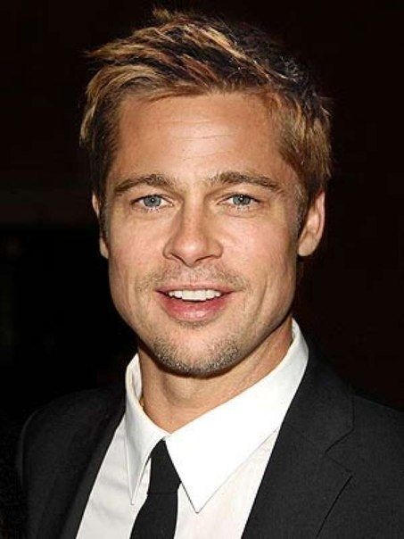

Участие
Инструменты

Материал из Википедии — свободной энциклопедии
В Википедии есть статьи о других людях с фамилией Питт. Эта статья — об актёре. О боксёре см. Питт, Брэд (боксёр).
Уи́льям Брэ́дли Питт (англ. William Bradley Pitt; род. 18 декабря 1963, Шони, Оклахома, США) — американский актёр и кинопродюсер. Лауреат двух премий «Золотой глобус». Обладатель премии «Оскар» как один из продюсеров фильма «12 лет рабства» — победителя в категории «Лучший фильм» на церемонии 2014 года — и за лучшую мужскую роль второго плана в картине «Однажды в Голливуде» (2020)[1]. До этого пять раз номинировался на премию «Оскар» (трижды — как актёр и два раза — как продюсер).
Уильям Брэдли Питт родился 18 декабря 1963 года в городе Шони (штат Оклахома, США), вырос в очень религиозной американской семье. Его отец, Уильям Питт, работал менеджером в компании, занимавшейся грузоперевозками, мать, Джейн Этта Хиллхаус — преподавателем в местной школе. Он, его брат Даг Питт и сестра Джулия Питт росли в Спрингфилде (штат Миссури), куда семья переехала вскоре после его рождения. В школе Питт занимался спортом, состоял в дебатном клубе, музыкальной секции и участвовал в студенческом самоуправлении. После школы Уильям поступил в университет Миссури — Колумбия, где изучал журналистику и рекламное дело. Однако после окончания университета по профессии работать он не пошёл, а отправился в Голливуд с целью начать актёрскую карьеру. Там он сменил своё имя на «Брэд Питт». В его честь был назван открытый в 2015 году вид ос Conobregma bradpitti[
Прежде чем к нему пришёл актёрский успех, Питт работал водителем, перевозчиком мебели и даже зазывалой в сети ресторанов «El Pollo Loco» и должен был в костюме гигантского цыплёнка приглашать прохожих посетить их заведение. Параллельно с этим он посещал актёрские курсы. Его карьера началась в 1987 году, он сыграл эпизодические роли в таких фильмах, как «Нет выхода», «Нейтральная полоса» и «Меньше, чем ноль»[5][6]. Дебютировал на телевидении, сыграв в нескольких эпизодах сериалов «Другой мир» и «Проблемы роста» (англ.)русск.[7], позже появился в сериале «Даллас». В следующем году сыграл в сериале «Джамп стрит, 21». В 1988 году получил ведущую роль в фильме «Тёмная сторона Солнца». Однако, пока монтировали фильм, гражданская война охватила ту часть Югославии, где проходили съёмки. Большая часть отснятого материала считалась утерянной до 1998 года, когда фильм наконец вышел на экраны. Питт снялся в двух картинах, которые вышли в 1989 году. В фильме «Счастливы вместе» ему досталась роль второго плана, а в картине «Сокращая класс» он сыграл главную роль. В том же году он появился в эпизодах сериалов «Президент класса» (англ.)русск. и «Кошмары Фредди», а также вновь в сериале «Проблемы роста». В телевизионном фильме «Слишком молода, чтобы умереть?» Питт сыграл наркомана, который убеждает героиню Джульетт Льюис устроиться танцовщицей в ночной клуб, и с этого момента девушка погружается в мир наркотиков, алкоголя, проституции. Он также снялся в шести эпизодах сериала «Дни славы» (англ.)русск. и в телевизионном фильме «Картина» (англ.)русск.. После второстепенных ролей в сериалах Питт получил роль Джея Ди в фильме «Тельма и Луиза» (1991). Его любовная сцена с Джиной Дэвис определила его как новый секс-символ[7][8]. За этим последовала главная роль в низкобюджетном фильме «Джонни Замша» и главная роль в мультипликационном фильме Ральфа Бакши «Параллельный мир» (1992). После съёмок в драме Роберта Редфорда «Там, где течёт река» (1992) Питт признался, что чувствовал давление и думал, что сыграл «слишком слабо». Питт полагал, что извлёк выгоду, работая с такой талантливой съёмочной группой. Он сравнил работу с Редфордом с игрой в теннис, говоря: «Играя с тем, кто лучше вас, вы сами становитесь лучше». В 1993 году он воссоединился с Джульетт Льюис в картине «Калифорния», сыграв Эрла Грейса — серийного убийцу и бойфренда героини Льюис. В фильме «Настоящая любовь» Питт сыграл роль Флойда, который лишь курит травку и смотрит телевизор.
В 1994 году в карьере Питта наступил переломный момент. Сначала он сыграл Луи де Пон дю Лака в фильме «Интервью с вампиром» по одноимённой книге Энн Райс и получил две премии на MTV Movie Awards 1995. Затем он снялся в фильме «Легенды осени» по одноимённому роману Джима Харрисона, сыграв Тристана Ладлоу, сына полковника Уильяма Ладлоу (Энтони Хопкинс). За эту роль Питт был впервые выдвинут на премию «Золотой глобус» в номинации «За лучшую мужскую роль». Хотя фильм получил смешанные отзывы, игра Питта была высоко оценена критиками. В 1995 году вместе с Морганом Фрименом, Гвинет Пэлтроу и Кевином Спейси Брэд Питт снялся в триллере Дэвида Финчера «Семь». Сам актёр назвал фильм великим и сказал, что участие в нём помогло ему расширить свои актёрские горизонты. Его игру высоко оценили критики, а журнал Empire включил его в список 25 самых сексуальных звёзд в истории кино. Питт был дважды назван «Самым сексуальным мужчиной среди ныне живущих» журналом People[9], став первым человеком, удостоившимся этого звания более одного раза. После фильма «Семь» Питт согласился сыграть второстепенную роль в фильме Терри Гиллиама «12 обезьян», главную роль в котором исполнил Брюс Уиллис. Фильм получил положительные отзывы критиков, в особенности была отмечена игра Питта. За роль Джеффри Гоинса актёр получил свой первый «Золотой глобус» и номинацию на «Оскар». Питт снялся в криминальной драме Барри Левинсона «Спящие» по одноимённому роману Лоренцо Каркатерры. Фильм получил смешанные отзывы. Затем он вместе с Харрисоном Фордом сыграл в фильме «Собственность дьявола» о гражданской войне в Северной Ирландии. Для роли ему пришлось говорить с ирландским акцентом, газета San Francisco Chronicle писала: «Питт использует верный тон для воссоздания акцента, но временами его ирландский акцент слишком убедительный, и трудно понять, о чём он говорит». Год спустя он исполнил роль Генриха Харрера в биографической драме Жан-Жака Анно «Семь лет в Тибете». Брэд тренировался в течение нескольких месяцев специально для роли. Вместе с партнером по фильму Дэвидом Тьюлисом он занимался альпинизмом в Калифорнии и Альпах. Питт получил главную роль в фильме «Знакомьтесь, Джо Блэк» 1998 года. Он изображал олицетворение смерти, которая вселилась в тело молодого человека, чтобы узнать, каково это — быть человеком. Фильм получил смешанные отзывы. По словам критика Микка ЛаСелла, Питт не смог убедить зрителя, что он знает все тайны смерти и вечности.
В 1999 году Питт сыграл одну из своих самых известных ролей в фильме «Бойцовский клуб»[10][11] Дэвида Финчера[12] по мотивам одноимённого романа Чака Паланика. Для роли Тайлера Дёрдена Брэд брал уроки бокса, тхэквондо и грэпплинга[13]. Во время съёмок у актёра откололась часть зуба, но он оставил скол, так как решил, что это соответствует характеру его героя. Премьера фильма состоялась на Венецианском кинофестивале 1999 года[14]. Несмотря на полярное мнение критиков, игру Брэда тепло приняли. Будучи большим поклонником фильма «Карты, деньги, два ствола», Питт встретился с Гаем Ричи и попросил его о роли в следующей картине. Питт получил роль Микки-цыгана в фильме «Большой куш» после того, как выяснилось, что он не может достоверно сымитировать лондонский акцент. Вместе с ним в фильме снялись Бенисио Дель Торо, Джейсон Стейтем, Деннис Фарина, Раде Шербеджия и Винни Джонс. Питт, Деймон и Клуни Вместе с Джулией Робертс Питт сыграл в романтической комедии «Мексиканец», а в политическом триллере «Шпионские игры» его партнером был Роберт Редфорд. В том же 2001 году Брэд появился в эпизоде сериала «Друзья», в котором играла его жена Дженнифер Энистон. За этот эпизод он был номинирован на «Эмми» как «Лучший приглашённый актёр в комедийном телесериале». Помимо этого, Питт снялся в ремейке одноимённого фильма 1960 года — «Одиннадцать друзей Оушена», вышедшем на экраны также в 2001 году. Вместе с ним в фильме снимались Джордж Клуни, Мэтт Деймон, Джулия Робертс, Энди Гарсиа и другие известные актёры. Фильм был тепло встречен критиками и имел внушительный кассовый успех. В 2003 году Брэд Питт впервые встал по ту сторону экрана, озвучив мультфильм «Синдбад: Легенда семи морей» и мультсериал «Царь горы».
В 2004 году в прокат вышли два фильма с участием Питта. В исторической драме «Троя» по мотивам поэмы Гомера «Илиада» актёр сыграл роль Ахиллеса[15]. Он потратил 6 месяцев, чтобы научиться обращаться с мечом. Это был первый фильм, производством которого занималась собственная кинокомпания Питта, Plan B Entertainment, которую он основал двумя годами ранее вместе с супругой Дженнифер Энистон и главой Paramount Pictures Брэдом Грэем. Фильм имел коммерческий успех, собрав в мировом прокате 497 млн долларов. Сборы от другого фильма 2004 года с участием актёра — «Двенадцать друзей Оушена» — составили 362 млн долларов. Следующей картиной Питта стал комедийный боевик «Мистер и миссис Смит» (2005), в котором он сыграл вместе со своей будущей спутницей жизни — Анджелиной Джоли (с которой на этих съёмках и сблизился). Собрав в прокате 478 млн долларов, фильм стал одним из хитов 2005 года. Питт неоднократно появлялся в телевизионных рекламных роликах. В 2005 году он снялся для американского рынка в рекламе для Heineken[16], а для дальневосточного рынка — в рекламе для Хонды Акуры, в которой он появился вместе с американской супермоделью Татьяной Сорокко[17]. Питт также снялся в японской рекламе для SoftBank и Edwin Jeans[18][19]. Продолжительное время снимался в рекламе часовой марки Tag Heuer. Вместе с Кейт Бланшетт Питт сыграл в драме Алехандро Гонсалеса Иньярриту «Вавилон». Игра Питта была хорошо оценена, а журнал Seattle Post-Intelligencer заметил, что он дал видимость для всего фильма. Позже актёр заявил, что принятие предложения о съёмках было, пожалуй, лучшим решением в его карьере. Фильм был показан на Каннском кинофестивале и Кинофестивале в Торонто. Фильм получил 7 номинаций на премию «Оскар», а сам актёр был номинирован на «Золотой глобус». В этом же году компания Питта продюсировала фильм Мартина Скорсезе «Отступники», и хотя сам актёр был одним из продюсеров, но «Оскар» за лучший фильм получил только Грэм Кинг. Затем Брэд вернулся к роли Расти Райана в фильме «Тринадцать друзей Оушена». Как и предыдущим частям трилогии, фильму сопутствовал кассовый успех — он собрал в прокате 311 млн долларов.
На съёмках триллера «Семь» в 1995 году Брэд сошёлся с Гвинет Пэлтроу[15], которая по фильму играла его жену, и у них завязался продолжительный роман. Однако, когда уже стали поговаривать o грядущей свадьбе возлюбленных (помолвка состоялась в декабре 1996 года), они совершенно неожиданно заявили o разрыве отношений (в июне 1997 года). Всё прошло без скандала, без обвинений в адрес друг друга и без каких-либо объяснений причин расставания. Питт женился на актрисе Дженнифер Энистон 29 июля 2000 года[15]. Они расстались 25 марта 2005 года после пяти лет совместной жизни. Их брак был официально расторгнут 2 октября 2005 года. Ходили слухи о том, что причиной расставания было нежелание Энистон иметь детей от Питта, однако сама Энистон это опровергает[29]. Ещё до оформления развода у Брэда начались отношения с его партнёршей по фильму «Мистер и миссис Смит» Анджелиной Джоли. После долгих опровержений 11 января 2006 года пара подтвердила свои отношения, заявив, что Джоли ждёт ребёнка от Питта. 27 мая 2006 года в Намибии у пары родилась дочь Шайло Нувель, а 12 июля 2008 года во Франции двойня — мальчик Нокс Леон и девочка Вивьен Маршелин. Все биологические дети Питта и Джоли появились на свет посредством кесарева сечения. Кроме этого, Брэд усыновил всех приёмных детей Анджелины. Сейчас у них шестеро детей: сыновья Мэддокс Шиван, Пакс Тьен и Нокс Леон; дочери Захара Марли, Шайло Нувель и Вивьен Маршелин[21]. Все носят фамилию Джоли-Питт. 23 августа 2014 года Питт и Джоли поженились во Франции, в принадлежащем им замке Мираваль[30]. Стало известно, что пара заключила жесткий брачный контракт. В случае измены Питта жене он лишится права совместной опеки над их детьми[31]. В 2013 году в интервью журналу Esquire рассказал, что страдает лёгкой формой болезни прозопагнозии[32]. В феврале 2015 года в ряде СМИ появилась информация, что Брэд Питт и Анджелина Джоли усыновили двухлетнего мальчика из Сирии по имени Мусса[33], однако в апреле того же года официальный представитель пары опроверг её[34]. 19 сентября 2016 года супруга Питта, Анджелина Джоли, подала заявление о расторжении брака. Сообщается, что причиной развода стали разногласия в методах воспитания детей, также из-за алкогольной зависимости Брэда Питта. Джоли просит опеку над детьми, а Питту предоставить право посещения. Также уточняется, что алиментов актриса не требует. «Я очень огорчён этим фактом развода, однако наиболее важным сейчас является благополучие наших детей. Я сердечно прошу прессу дать им личное пространство, которого они заслуживают в такой трудный период» — приводит телеканал CNN официальное заявление Питта.
англ. Brad Pitt
Брэд Питт в 2019 году
Имя при рождении Уильям Брэдли Питт